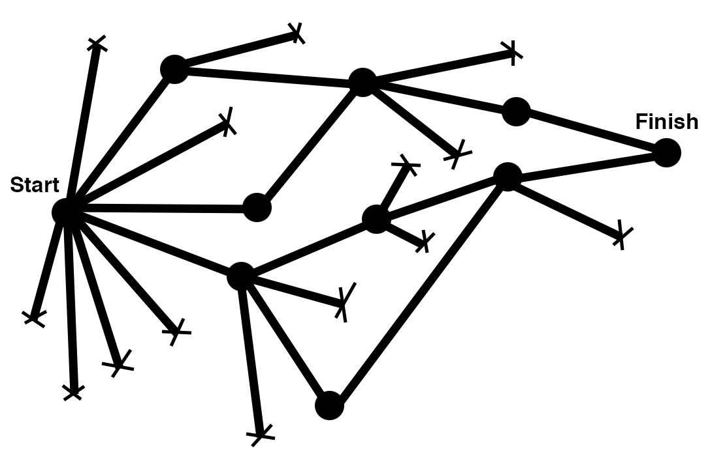

01/11/16 - temps de lecture: 4 minutes
Responsable Design et Expérience Utilisateur chez The Computer Firm
PME et profession libérales : votre site internet est-il à la hauteur de votre expertise ? 4 questions essentielles à se poser.
Alors que les standards de qualité du web ne cessent d’augmenter, établir une présence digitale de qualité n’est pas chose facile. Comment savoir si votre site internet et de manière plus large, l’ensemble de votre présence digitale, sont à la hauteur de l’image que vous voulez donner ?
Nous vous proposons de vous poser 4 questions, afin de vous rendre compte de votre compétitivité sur internet :
1) Accessibilité - Mon site web est-il bien positionné dans les résultats de recherche ?
Avant même que vos clients puissent évaluer si votre entreprise répond à leurs attentes, ils doivent dans un premier temps prendre connaissance de votre existence, parmi la multitude d’acteurs présents dans votre industrie. Le référencement, ou SEO (Search Engine Optimization) est l’ensemble des actions qui permettent à votre site d’apparaître aussi haut que possible dans les moteurs de recherche.
Vous pouvez effectuer une recherche rapide sur Google avec des mots clés relatifs à votre zone géographique et votre domaine d'expertise (ex.: cabinet dentaire Genève) pour évaluer la position de votre site dans les résultats Google, où 90% des clics sont concentrés sur la première page de résultats. Nous vous recommandons également d’effectuer une recherche similaire sur les annuaires spécialisés de votre corps de métier, tels que les pages jaunes (local.ch).
Si cela s’applique à votre domaine d’activité, prenez également le temps de mettre à jour vos réseaux sociaux professionnels (LinkedIn) et personnels (Facebook, Instagram, Twitter) afin de mettre en avant votre entreprise. Ainsi, vous notifiez votre entourage, et activez votre réseau. Pour les entreprises locales, le bouche à oreille est l’outil de prospection le plus performant.
2) Adaptativité - Comment mon site apparaît-il sur tablette et mobile ?
Votre site est-il accessible et parfaitement lisible sur mobile, tablette et ordinateur ?
En 2016, 40% de la navigation web s’effectue via un appareil mobile (smartphone ou tablette). Ces chiffres sont en constante augmentation, il est donc indispensable de soigner le rendu visuel multi-support (en anglais : “responsive”) de votre site internet.
Si vous souhaitez en savoir plus, n’hésitez pas à consulter notre article dédié à l’importance du design adaptatif.
3) Design - L’aspect visuel de mon site est-il à l’image de mon expertise ?
Vous attachez sûrement une grande importante à l’impression que vous donnez à vos nouveaux clients lorsque vous les rencontrez pour la première fois, afin de les rassurer sur vos compétences et de créer un lien de confiance permettant une collaboration fructueuse.
Cependant, dans bien des cas, le premier contact n’est pas celui où vous vous rencontrez en personne. C’est ce moment où votre futur client effectue une recherche en ligne pour trouver des informations sur vous, et établit une certaine image de la qualité de vos services.
Dans ce sens, il est nécessaire que votre présence web soit impeccable et maîtrisée. Cela inclut, mais ne se limite pas à :
- Le choix d’une palette de couleurs et de visuels adaptés à votre industrie, afin que votre site devienne un prolongement de votre entreprise physique. Une étude d’avocats préférera par exemple des tons monochromes avec de subtiles touches de couleurs afin de donner une image lisse, intemporelle et sérieuse.
- Un contenu textuel dont le ton est adapté à votre audience cible, afin de l’informer de manière efficace sur l’étendue de vos services et votre expertise. Par exemple, des termes juridiques ou économiques que vous maîtrisez parfaitement ne seront pas nécessairement compris par tous, et devront peut-être être adaptés. Un client bien renseigné vous permettra également gagner du temps lors d’une première rencontre.
4) Expérience de navigation - La présentation des informations sur mon site permet-elle aux visiteurs de trouver intuitivement ce qu’ils y cherchent ?
L’ergonomie, aussi appelé expérience de navigation, expérience utilisateur, ou encore UX est définie comme suit :
La façon dont un site web ou une application est perçue et ressentie par ses utilisateurs en fonctions de ses qualités ergonomiques, de navigation et de contenu. Source
C’est l’élément crucial qui va impacter votre taux de rebond, c’est à dire le nombre de visiteurs qui consultent votre site, puis le quittent sans y avoir effectué d’action, souvent car ils n’ont pas réussi à accéder à l’information qu’ils étaient venus chercher.

Vous pouvez rapidement faire un état des lieux grâce à un exercice simple. Personne ne connaît mieux que vous les questions que se posent vos clients. Sélectionnez les questions les plus fréquentes, et visualisez votre site internet :
- Trouvez-vous rapidement l’information à laquelle vous pensez ?
- Les réponses que vous donneriez en personne sont-elles alignées avec les informations présentes sur votre site ?
- D’autres informations, moins pertinentes, prennent-elle plus de place ?
Se poser les bonnes questions et s’entourer de professionnels pour optimiser sa présence web
Dans cet article, nous avons abordé les points essentiels qui font de votre site internet un outil de communication puissant et pertinent. Comme vous pouvez le constater, il est autant important d’optimiser l’accessibilité au site internet via un référencement efficace et un design adaptatif, que de soigner son aspect visuel et l'expérience utilisateur des visiteurs.
Suite à cet audit préliminaire, vous pourrez répondre à la question : mon site est-il à la hauteur mon votre expertise ?
Si vous estimez que des améliorations sont nécessaires, The Computer Firm est à votre disposition pour vous accompagner dans la création de la présence digitale qui vous représentera le mieux, et qui deviendra votre meilleur outil de prospection client.
N’hésitez pas à engager la discussion avec nous, à hello@thecomputerfirm.com,
ou au + 41 22 548 02 86.
Responsable Design et Expérience Utilisateur chez The Computer Firm